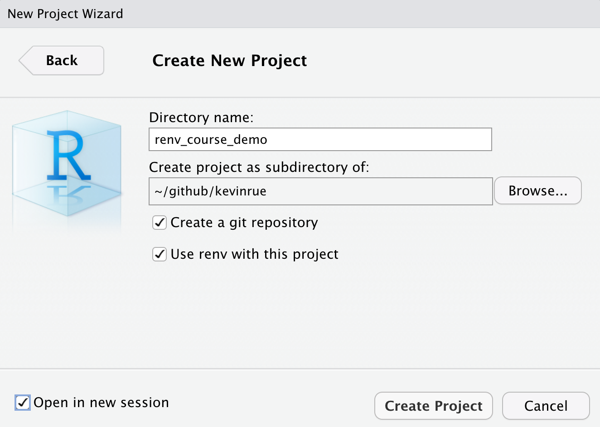
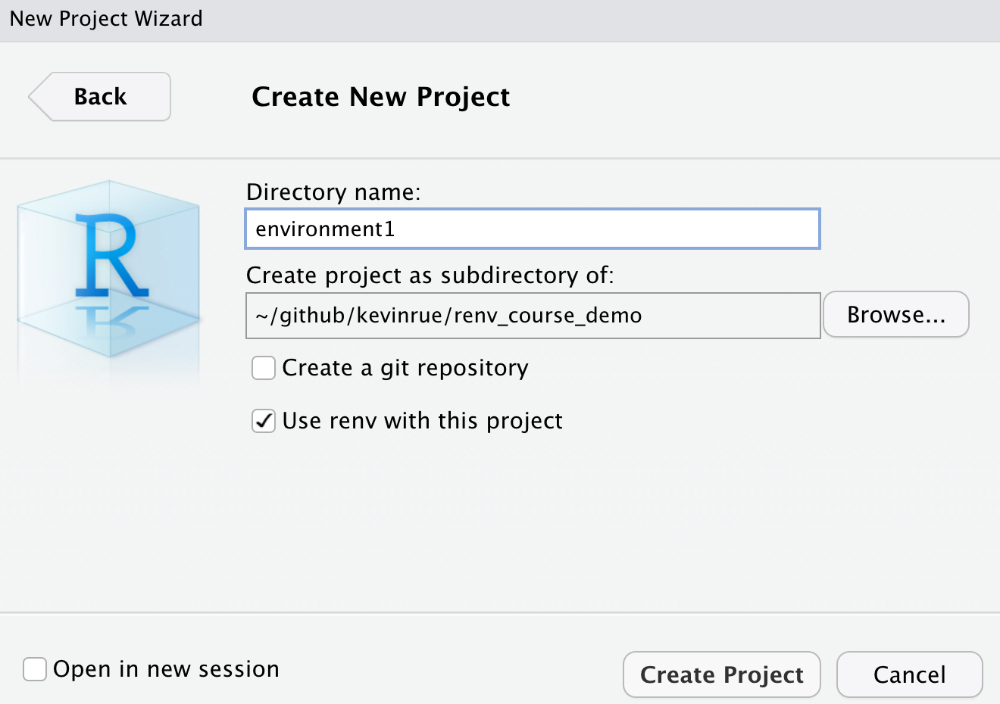

Create R environments for teaching
In this post, I’ll describe a use of renv to manage a collection of environments for a training course, in a single Git repository.
I will cover some caveats at the end of the post, so that you can decide whether this set up suits your own needs, but for now - before I give myself a chance to confuse you - I’ll just get straight into my process.
Step 1. Set up the main Git repository
This Git repository is the one repository that I provide to the next group of participants to the course. It is intended as a read-only repository that participants are asked to clone, and where they’ll fetch the files to re-create the R environment that I prepared for them.
- In RStudio, create a new project
- Use
git - Use
renv
- Use

- Edit the
.gitignorefile. Add the following lines.
solutions.R
dataI’ll get ahead of myself, for a moment here.
These two lines tell git to ignore files that don’t exist yet.
I will create those in subsequent steps, so that I never accidentally commit and push them.
Those files are useful to me, but I don’t want to:
- commit (potentially large) data sets to the Git repository
- give the solution to participants.
Step 2. Create an project environment
The renv package manages a single environment per R project.
As such, for each environment that I want participants to use for a set of exercises, I create a new R project, under the main Git repository, setting up a new renv library for that project.
- In RStudio, create a new project for the environment, directly within the main repository.
- Do not use
git - Use
renv
- Do not use
We don’t initialise a new Git repository this time, as all the environments are managed by the main Git repository that we created in step 1.

Step 3. Write an R script using all relevant packages
The renv package is capable of detecting the packages needed to run all the scripts in an R project, usually with a bit of extra help.
I leverage that feature, writing a script that outlines my own rough version of the code that I expect participants to write; but more importantly this script also contains the statements loading all the packages that I expect participants to use. This allows renv to detect and record all the packages that I load in the script, their own dependencies, and the version of all those packages that I used to run and test that my script actually works without error.
As such, participants should not need to install any packages at all; the environment should provide everything they need to write a script equivalent to my own.
- Launch the R project for the environment created at step 2.
- Create a script called
solutions.R, within in this project directory. - Write code that performs the tasks you expect participants to do themselves, loading all the packages that you expect them to use.
For instance, the simple script below will allow me to create an environment that records the version of ggplot2, cowplot, and their relevant dependencies in the project library used to run the script, so that I can provide a working environment that I have tested myself and that participants can use with confidence.
Step 4. Record the environment
Having saved the script in the environment project at step 3, I then use renv to record the packages and versions that I used to write, and run the script to test the code.
renv::hydrate()to make sure all the packages that I need are installedrenv::clean(), to remove packages that I may have installed in the environment, but that are not used by my script any more.- When prompted, answer “no” to the first question (don’t delete packages from your system R library), answer “yes” to the second question (delete packages in your project library that are not needed to run the script).
- When including Bioconductor packages in the environment, you can answer “no” to the second question when the only packages suggested for removal are
BiocStyle::Biocpkg("BiocVersion")andBiocStyle::Biocpkg("BiocManager").
renv::snapshot()to record the current version of all the packages.renv::status()to check that the environment recorded matches the packages and versions currently installed.
You may need to repeat some of the commands above, as needed, until you are satisfied with your script, the packages installed in your environment, and renv::status() prints the following message:
* The project is already synchronized with the lockfile.Step 5. Commit and push
Once I am satisfied with the environment, and the script runs in that environment, I am ready to commit the files that define the environment.
git add ., to stage all the changes (use with care if you’re editing multiple environments simultaneously)
The first time I add files to an environment, this is the list of files that I typically see:
On branch master
Changes to be committed:
(use "git restore --staged <file>..." to unstage)
new file: .Rprofile
new file: environment1.Rproj
new file: renv.lock
new file: renv/.gitignore
new file: renv/activate.R
new file: renv/settings.dcfIn particular, the renv.lock file is the one that contains the list of packages and versions in the environment.
Other files - .Rprofile and those in the renv/ subdirectory - are used by renv to restore and load the environment in subsequent R sessions.
git commit -m "added environment1", to commit the changes (with an appropriate message).git push, to deploy the new/updated files an online repository I that participants hae access to (e.g. GitHub).
Step 6. Restoring and using the environment
Everything is now set for participants to fetch and use those environments.
First, I ask participants to clone the repository that contains the environments. They can clone it anywhere on their system, that is not already a Git repository.
git clone ..., replacing the dots with the link to the repository where I pushed the files.
Then, for every new environment that I want them to use for an exercise, I ask them to copy (recursively) the subdirectory that corresponds to the environment into their work directory. That is, I ask them to copy the environment as a subdirectoy of the Git repository that they use to store their code for the course. In a Terminal, this would look like the following command:
cp -r .../environment1 .../course-repository/, replacing dots with the full path to the relevant locations on their system.
Then participants can launch an RStudio session using the ...Rproj file in the copied environment.
For instance, in a Finder windows, in this example, click on the environment1.Rproj file to launch RStudio.
Finally, I ask them to restore the environment, which means installing all the packages that I expect them to use for that session.
renv::restore(), to restore the environment, allowing renv to install all the packages listed in therenv.lockfile (with the appropriate version).
Caveats
Ideally, I would argue that it is better to manage one R environment per Git repository, which would itself correspond to one R project. That way, users can clone each individual repository, and carry out exercises in the environment provided by the corresponding repository. Furthermore, users could also fork each original repository, to work and commit their own code for each project, independently.
However, for practical reasons, my approach here is it to manage multiple environments in the same repository, with the following motivations:
- I would rather avoid participants having to clone one repository per day, every day, over the duration of the course.
- I don’t expect participants to fork, clone, and push in the original repository.
Instead:
- At the start of the course, participants initially set up their own Git repository, where they store all the code they write throughout the course.
- I want to provide a single “read-only” repository where participants can find the files to recreated the environment
- Participants can then copy each from the “read-only” repository, to their own repository, restore the environment, set up the input data, and write and commit their own code in their own repository.
Kevin Rue-Albrecht
Postdoctoral Researcher
My research interests include computational biology, software development and single-cell genomics.